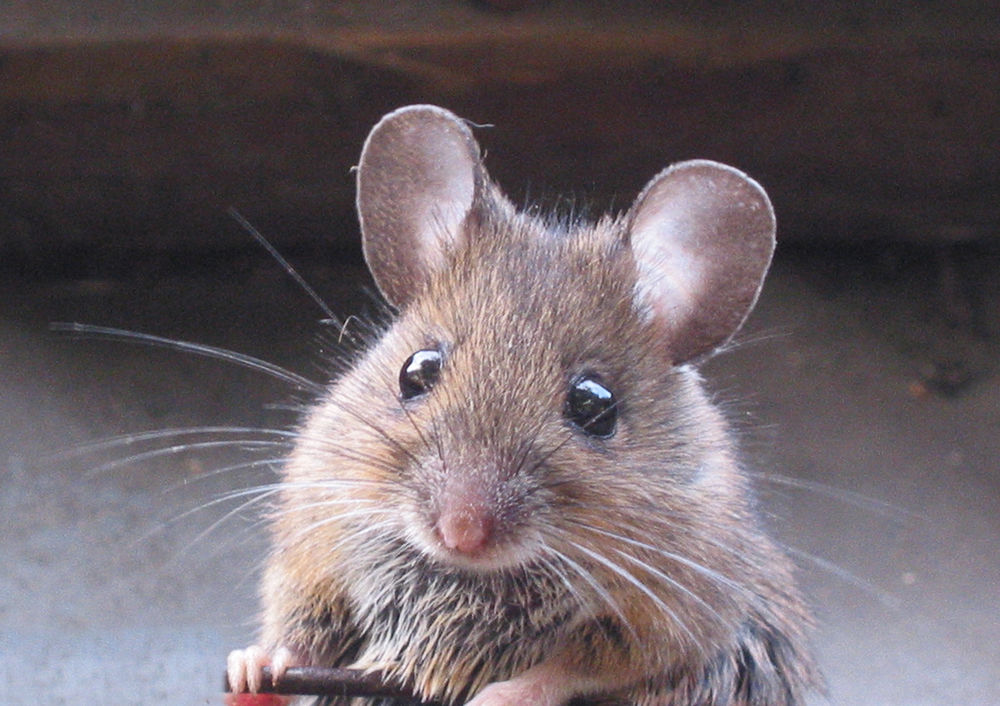
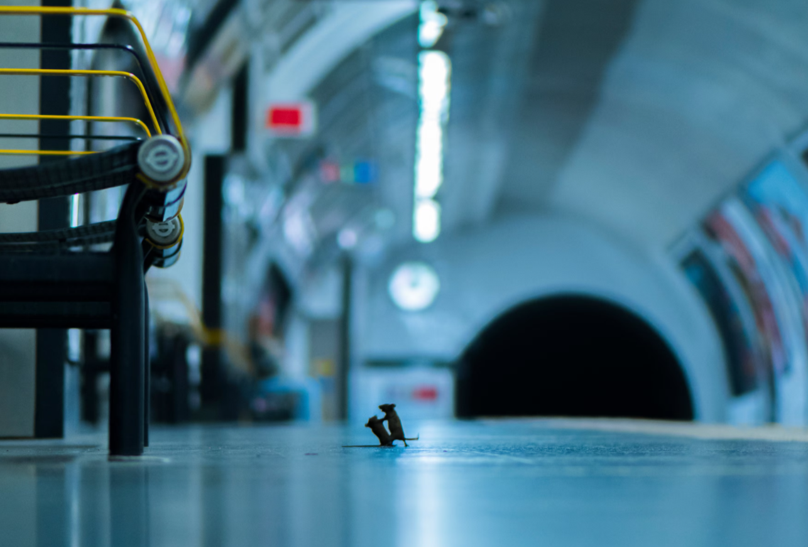
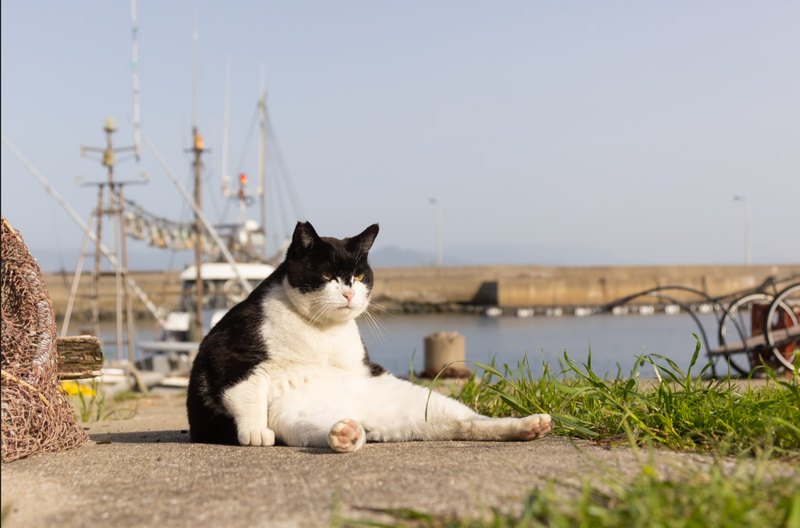

BBC film-maker and photographer Sam Rowley captured this astonishing scene of mice apparently squabbling for dropped crumbs after he had spent five cold nights lying flat on a London Underground platform. “The main challenge wasn’t finding the wildlife, but the logistics,” he says. “Every time someone came over to talk to me, the mice would scatter and I’d have a 10-minute lovely, yet distracting, conversation on my hands.” After hours of patiently waiting, he witnessed a short-lived scuffle that broke out among the rodents. “It only lasted half a second, but fortunately I was ready with my finger on the trigger. I didn’t immediately love the photo; if you look closely the mice are slightly softly focused. This is an immediate red flag for me, no matter what the rest of the image looks like. It was only years later, when I was going through old photos, that I rediscovered it.” Rowley has since photographed hyenas, vultures and Galápagos tortoises – but “it’s the little old mice of the London Underground that have captured people’s imaginations.”

Photograph: Sam Rowley
News of the large feral feline population on Japan’s Ainoshima island acted as catnip to professional cat photographer Kenichi Morinaga. “My shooting style is walking from morning until sunset, without lunch, to find lazy cats,” he says. This heavyweight individual lounging harbourside with a mafioso air immediately caught his eye. “This big boss makes us smile … Maybe he has a good build. That, and his way of sitting is so embarrassing and lazy. That’s why it is funny.”
Psst! Want to see some cute cat GIFs? Click on the kitty!

Photograph: Kenichi Morinaga